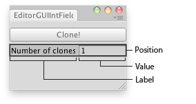

EditorGUI.IntField
public static int IntField(Rect position,
string label,
int value,
GUIStyle style = EditorStyles.numberField);
public static int IntField(Rect position,
GUIContent label,
int value,
GUIStyle style = EditorStyles.numberField);
Parameters
| position | Rectangle on the screen to use for the int field. | |
| label | Optional label to display in front of the int field. | |
| value | The value to edit. | |
| style | Optional GUIStyle. |
Returns
int The value entered by the user.
Description 描述
Makes a text field for entering integers.

Int Field in an Editor Window.
//Create a folder and name it "Editor" (Right click in your Project Asset folder and go to Create>Folder) if you don't already have one //Place this script in the Editor folder //This script creates a new menu at the top of the Editor named "Examples" with one item "Clone Object".
using UnityEngine; using UnityEditor;
class Example : EditorWindow { int clones = 1;
[MenuItem("Examples/Clone Object")] static void Init() { //Create the new Editor window and show it EditorWindow window = GetWindow(typeof(Example)); window.Show(); }
void OnGUI() { //The field which allows you to input the amount of clones of a GameObject you want clones = EditorGUI.IntField(new Rect(0, 35, position.width, 15), "Number of clones:", clones);
//If there isn't a currently selected GameObject, this message appears if (Selection.activeGameObject == null) EditorGUI.LabelField(new Rect(3, 3, position.width, 20), "Please click on a GameObject in your Scene!");
//Press the clone Button if (GUI.Button(new Rect(0, 55, position.width, 20), "Clone!")) { //Check that you have a GameObject selected if (Selection.activeGameObject != null) { //Loop until the number of clones is reached for (int i = 0; i < clones; i++) { //Spawn each of the clones Instantiate(Selection.activeGameObject, Vector3.zero, Quaternion.identity); } } } } }